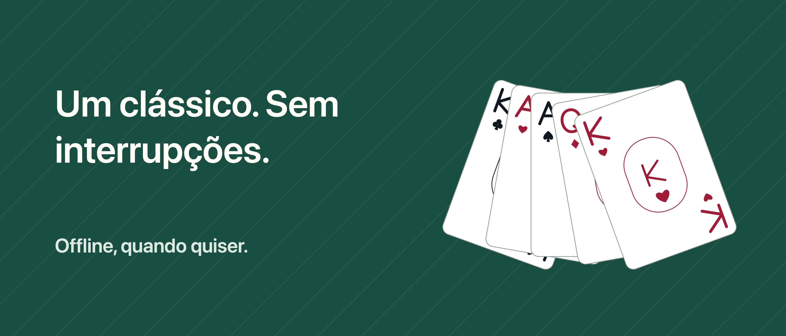

Paciência Unbound

Um momento para você, uma carta de cada vez.
Seu momento com as cartas, sem interrupções. Jogue Klondike comprando 1 ou 3 cartas, sem anúncios, conta IFG ou assinatura.
DESFAÇA E TENTE DE NOVO Desfazer, refazer e dicas de jogadas válidas são grátis. Arraste as cartas ou toque na carta e no destino. Escolha Relax para ocultar o relógio ou Clássica para ver tempo e jogadas.
UMA PARTIDA PARA RETOMAR Partidas salvas e estatísticas ficam no dispositivo. Escolha uma distribuição aleatória ou uma posição inicial com solução verificada e volte para o desafio diário. Nem toda partida aleatória tem solução; suas escolhas também podem bloquear uma partida verificada.
MAIS VARIANTES COM PRO Uma única compra adiciona FreeCell, Spider com 1, 2 e 4 naipes, arquivo de desafios e mais personalização: seis mesas, seis versos e três estilos de cartas no total. Sem dicas para comprar ou gastar.
O jogo funciona offline. Comprar ou restaurar Pro pode exigir internet e uma Conta Apple. O progresso não é sincronizado entre dispositivos e pode ser apagado ao desinstalar o app. Restaurar Pro não recupera o progresso excluído.